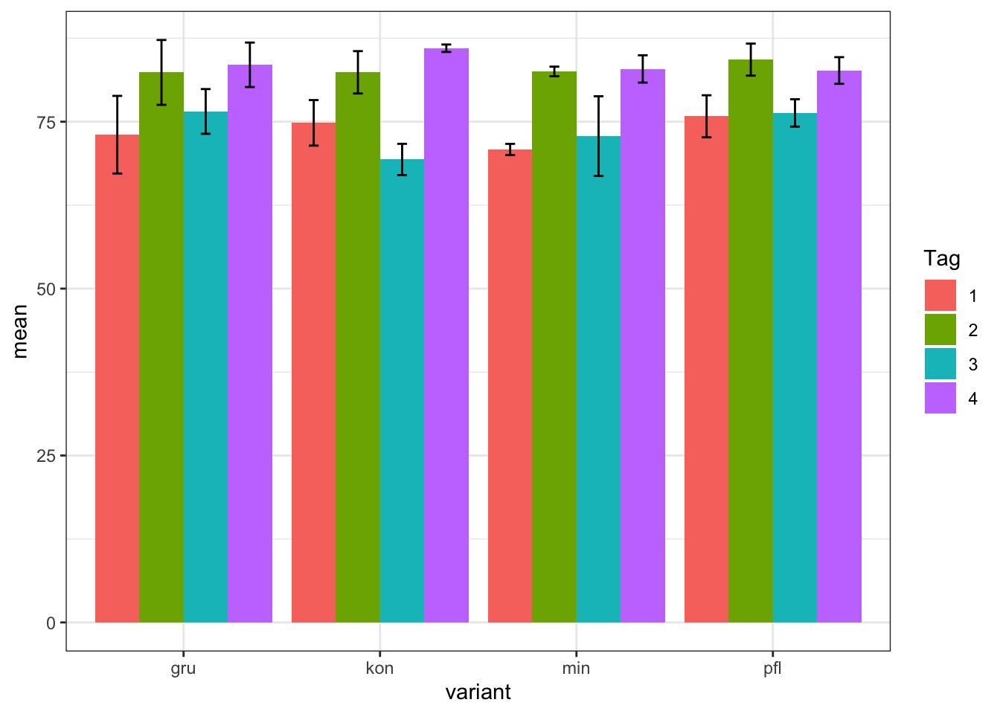
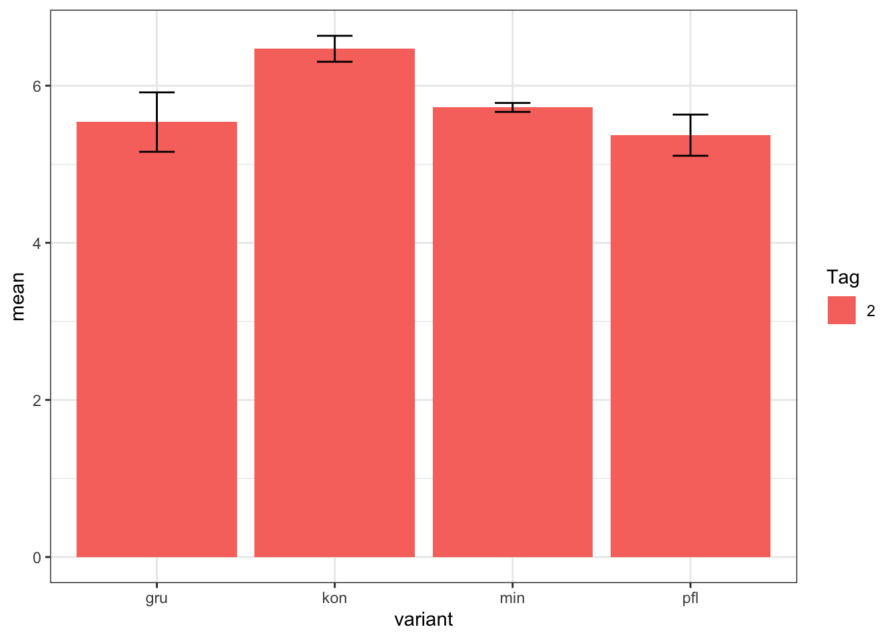
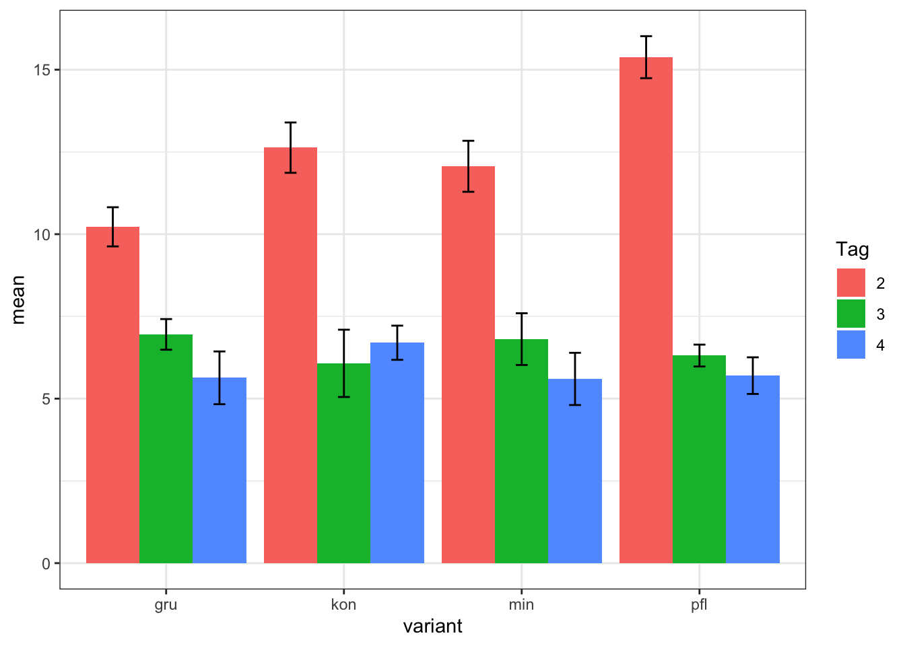
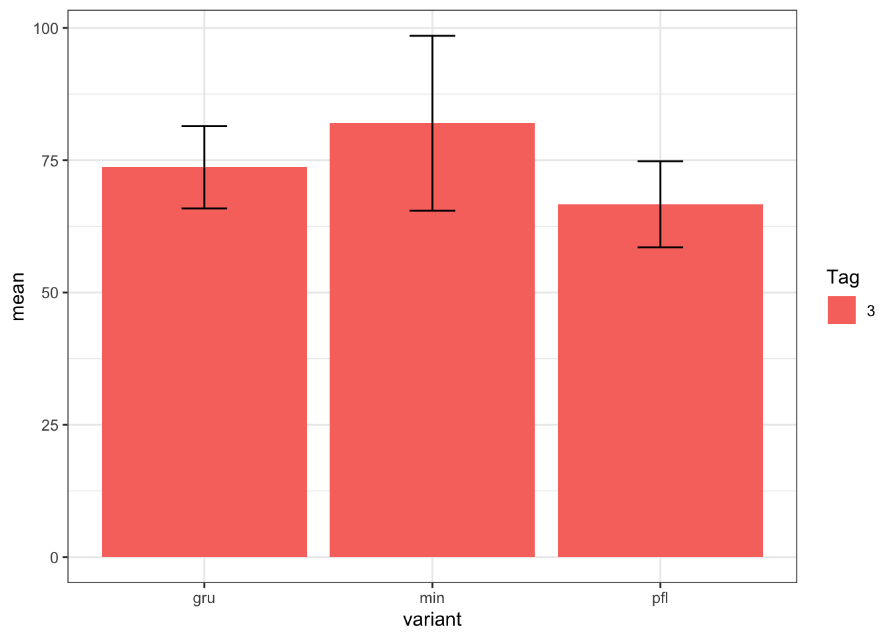

Appendix A — Beispielhafte Auswertungen
Version vom November 29, 2022 um 18:18:34

Du findest auf YouTube in der Playlist Spielweise in R (Level 3) viele der Analysen hier einmal als Video. Ich werde zwar alles nochmal hier als Text aufschreiben, aber manchmal ist das Sehen und Hören dann einfacher.
Worum geht es in diesem Kapitel? Ich rechne hier fröhlich Dinge und präsentiere dann die Ergebnisse. Das heißt, du findest hier beispielhafte Auswertungen, die eventuell auch deine Problemstellung betreffen. Da ich selber meist keine Ahnung von der Biologie hinter den Experimenten habe, musst du mir nachsehen, dass ich hier nie zu einem echten biologischen Schluss oder Auswertung komme.
- In Kapitel A.2 schauen wir uns einmal die Erstellung eines Isoplethendiagramms für Münster & Osnabrück aus den frei verfügbaren Daten des Deutschen Wetterdienstes an.
- In Kapitel A.3 rechnen wir einmal ein simples Beispiel für Zähldaten in zwei Gruppen. Wir haben hier nicht wiederholt gezählt, sondern nur jeweils einmal an einer Stelle.
- In Kapitel A.4 rechnen wir nochmal eine zweifaktorielle ANOVA mit Interaktionsterm durch. Wir kriegen dann unser compact letter display wie auch die Konfidenzintervalle wieder.
- In Kapitel A.5 rechnen wir einen Games Howell Test für normalverteilte Daten mit Varianzheterogenität. Hier hauen wir ein wenig auf die Pauke und rechnen alles in wenigen Zeilen mit der Funktion
map(). War eine spaßige Auswerung für mich, da ich hier mal wieder programmieren üben konnte. - In Kapitel A.6 schauen wir uns ein größeres Beispiel für die Analyse von Wurzelbonituren an. Im Prinzip geht das natürlich auch alles für jede andere Bonitur. Wenn du eine andere Bonitur hast, kannst du natürlich auch den Weg der Analyse gehen.
- In Kapitel A.7 haben wir nochmal ein schönes Beispiel für eine Analyse mit mehreren Faktoren und verschiedenen Outcomes. Wir haben also einen Blumenstrauß an Daten, die wir sortieren und auswerten müssen. Da ich selber keine Ahnung vom Pflügen habe, gehen wir die Sache distanziert durch.
Je weiter du nach unten in diesem Kapitel kommst, desto wilder wird der R Code. Ich werde noch eine Zeit brauchen, bis ich alles wieder schon mit Text hier verarbeitet habe. Es wird aber immer mal wieder etwas messy aussehen. Hier wird eben auch gearbeitet.
A.1 Genutzte R Pakete für das Kapitel
Wir wollen folgende R Pakete in diesem Kapitel nutzen.
pacman::p_load(tidyverse, magrittr, readxl,
broom, multcomp, emmeans, effectsize, report,
see, metR, parameters, multcompView,
modelsummary, rstatix,
conflicted, ordinal)
## resolve some conflicts with same function naming
conflict_prefer("select", "dplyr")
conflict_prefer("filter", "dplyr")Am Ende des Kapitels findest du nochmal den gesamten R Code in einem Rutsch zum selber durchführen oder aber kopieren.
A.2 Isoplethendiagramm für Münster & Osnabrück
Im Folgenden zeige ich ein Beispiel für die Nutzung der entgeltfreien Informationen auf der DWD-Website. Wir finden dort auf der Seite die Klimadaten für Deutschland und natürlich auch die Daten für Münster/Osnabrück. Ich habe mir flux die Tageswerte runtergeladen und noch ein wenig den Header der txt-Datei angepasst. Du findest die Datei day_values_osnabrueck.txt wie immer auf meiner GitHub Seite. Du musst dir für andere Orte die Daten nur entsprechend zusammenbauen. Am Ende brauchen wir noch die Informationen zu den Tages- und Monatswerten damit wir auch verstehen, was wir uns da von der DWD runtergeladen haben. Ich nutze gleich nur einen Ausschnitt aus den Daten.
Wenn wir Geocomputation with R machen wollen, dann haben wir natürlich noch viele andere Möglichkeiten. Das verlinkte Buch hilft da weiter.
Dann lesen wir die Daten einmal ein und müssen dann eine Winkelzüge machen, damit wir aus dem Datum JJJJMMDD dann jeweils den Monat und den Tag extrahiert kriegen. Dann müssen wir die Monatszahl und die Tageszahl noch in eine Zahl umwandeln. Sonst geht es schlecht mit dem Zeichnen des Konturplots. Wir nehmen dann die Temperaturen TG, TN, TM und TX um diese Temperaturen in vier Konturplots zu zeigen.
weather_tbl <- read_table("data/day_values_osnabrueck.txt") %>%
mutate(JJJJMMDD = as.Date(as.character(JJJJMMDD), "%Y%m%d"),
day = as.numeric(format(JJJJMMDD, "%d")),
month = as.numeric(format(JJJJMMDD, "%m")),
year = as.numeric(format(JJJJMMDD, "%Y"))) %>%
select(month, day, TG, TN, TM, TX) %>%
na.omit() %>%
gather(temp, grad, TG:TX) %>%
mutate(temp = factor(temp,
labels = c("Minimum der Temperatur in 5 cm (TG)",
"Minimum der Temperatur in 2 m (TN)",
"Mittel der Temperatur in 2 m (TM)",
"Maximum der Temperatur in 2 m (TX)")))Nachdem wir ordentlich an den Daten geschraubt haben können wir jetzt in Abbildung A.1 die vier Konturplots sehen. Wir mussten noch das Spektrum der Farben einmal drehen, damit es auch mit den Temperaturfarben passt und wir haben noch ein paar Hilfslinien miteingezeichnet.
ggplot(weather_tbl, aes(month, day, z = grad)) +
theme_minimal() +
geom_contour_filled(bins = 13) +
geom_contour(binwidth = 2, color = "black") +
facet_wrap(~ temp, ncol = 2) +
scale_fill_brewer(palette = "Spectral", direction = -1) +
scale_x_continuous(breaks = 1:12) +
geom_vline(xintercept = 1:12, alpha = 0.9, linetype = 2) +
geom_hline(yintercept = c(5, 10, 15, 20, 25, 30),
alpha = 0.9, linetype = 2)
A.3 Analyse von Anzahlen in zwei Gruppen
In dieser sehr simplen Analyse haben wir zwei Gruppen vorliegen. Die Gruppe 1 ist hat zwei Level oder Behandlungen abgekürzt mit I und II. Die Gruppe 2 hat insgesamt vier Level oder eben Behandlungen, die wir mit A, B, C und D bezeichnen. Wir haben jetzt für die jeweiligen Kombinationen auf dem Feld etwas gezählt. Wir haben also für jede dieser Kombinationen nur eine Zahl. Es ergbit sich somit die folgende Matrix an Zahlen.
rel_mat <- matrix(c(45, 14, 4, 0,
25, 32, 5, 1), nrow = 2, byrow = TRUE,
dimnames = list(c("I", "II"), c("A", "B", "C", "D")))
rel_mat A B C D
I 45 14 4 0
II 25 32 5 1Nun können wir den \(\mathcal{X}^2\)-Test nutzen, um zu testen, ob die Zahlen in der Matrix bzw. auf unseren Feld gelcihverteilt sind. Die Nullhypothese lautet, dass es keinen Zusammenhang zwischen der Gruppe 1 und der Gruppe 2 auf dem Feld gibt. Die Zahlen sind also rein zufällig in dieser Anordnung.
chisq.test(rel_mat)
Pearson's Chi-squared test
data: rel_mat
X-squared = 13.8689, df = 3, p-value = 0.0030892Wir erhalten einen sehr kleinen \(p\)-Wert mit \(0.003\). Wir können daher die Nullhypothese ablehnen, da der \(p\)-Wert kleiner ist als das Signifikanzniveau \(\alpha\) mit 5%. Wir haben ein signifikantes Ergebnis. Wir können von einen Zusamenhang zwischen den beiden Gruppen ausgehen.
Mit Cramers V können wir auch noch die Effektstärke für einen \(\mathcal{X}^2\)-Test berechnen.
cramers_v(rel_mat) Cramer's V (adj.) | 95% CI
--------------------------------
0.29 | [0.00, 1.00]
- One-sided CIs: upper bound fixed at [1.00].Der Effekt ist mit \(0.33\) nicht besonders stark. Du kannst Cramers V wie die Korrelation interpretieren. Ein V von 0 bedeutet keinen Zusammenhang und ein V von 1 einen maximalen Zusammenhang. Wir wollen uns die Daten dann nochmal in einer Abbidlung anschauen. Dafür müssen wir die Matrix erstmal in einen Datensatz umwandeln und die Gruppen zu Faktoren machen.
plot_tbl <- rel_mat %>%
as_tibble(rownames = "group1") %>%
gather(A:D, key = "group2", value = "value") %>%
mutate(group1 = as_factor(group1),
group2 = as_factor(group2))In Abbildung A.2 sehen wir die Matrix der Zähldaten für die beiden Gruppen nochmal visualisiert. Beim betrachten fällt auf, dass die beiden Level C und D kaum Zähldaten enthalten. Hier wäre zu überlegen die beiden Level aus der Analyse herauszunehmen und einen klassischen \(\mathcal{X}^2\)-Test auf einer 2x2 Kreuztabelle zu rechnen.
ggplot(plot_tbl, aes(x = group2, y = value, fill = group1)) +
theme_bw() +
geom_bar(stat = "identity", position = position_dodge()) +
labs(x = "Gruppe 2", y = "Anzahl", fill = "Gruppe 1") +
scale_fill_okabeito() 
A.4 Auswertung zweifaktorielle ANOVA mit Interaktion
Hier kommt jetzt ein schönes Beispiel für eine Auswertung von einem dreifaktoriellen Design mit einer ANOVA. Passenderweise haben wir auch einen Interaktionsterm vorliegen. Unser dreifaktoriellen Design ist auch kein echtes dreifaktorielles Design. Wir müssen uns hier entscheiden, welcher der zwei Blockfaktoren nun unsere Wiederholung sein soll. Aber schreiben wir erstmal unser Modell auf, bevor wir das Modell mit Inhalt füllen.
\[ y \sim f_1 + b_1 + b_2 \]
In unserem Beispiel schauen wir uns das Pflanzenwachstum growth in einer Klimakammer mit verschiedenen Belichtungsstufen light_intensity sowie der Position der Pflanze in der Lichtkammer. Die Pflanze hat eine Position im rack und dann im layer. So ergibt sich dann für uns folgendes ausgeschriebenes Modell.
\[ growth \sim light\_intensity + layer + rack \]
In dieser Form wird unser Modell aber leider nicht funktionieren. Wir hätten dann keine Wiederholungen mehr. Jede Pflanze würe dann exakt durch eine Faktorkombination beschrieben. Wir sehen gleich das Problem visualisiert. Vorher müssen wir uns aber einmal die Daten einlesen und eine Menge Faktoren erschaffen. Achtung, das Erschaffen der Faktoren ist hier sehr wichtig! Im Orginaldatensatz stehen nur Zahlen für die Faktoren. Wir kriegen dann ein echtes Problem.
light_tbl <- read_excel("data/light_intensity_data.xlsx") %>%
mutate(rack = factor(rack, labels = c("left", "middle", "right")),
layer = factor(layer, labels = c("1st", "2nd", "3rd")),
light_intensity = factor(light_intensity, labels = c("low", "mid", "high")),
growth = as.numeric(growth))In der Tabelle A.1 sehen wir nochmal einen Ausschnitt aus den Daten.
| rack | layer | light_intensity | growth |
|---|---|---|---|
| left | 1st | low | 17.1 |
| left | 1st | low | 14.9 |
| left | 1st | low | 10.3 |
| left | 1st | low | 23.5 |
| left | 1st | low | 0.3 |
| left | 1st | low | 3.6 |
| … | … | … | … |
| right | 3rd | low | 19.5 |
| right | 3rd | low | 25.9 |
| right | 3rd | low | 35.5 |
| right | 3rd | low | 44.1 |
| right | 3rd | low | 10.7 |
| right | 3rd | low | 18.3 |
Nachdem wir die Daten eingelesen haben, schauen wir uns den Sachverhalt einmal für die drei Faktoren über die Level der einzelnen Faktoren an. Wir nutzen dafür die Funktion datasummary_crosstab() aus dem R Paket modelsummary. Wir können uns hier die Anzahl der Beobachtungen je Faktorlevelkombination einmal anschauen.
datasummary_crosstab(light_intensity ~ layer * rack, data = light_tbl,
statistic = NULL)| light_intensity | left | middle | right | left | middle | right | left | middle | right |
|---|---|---|---|---|---|---|---|---|---|
| low | 6 | 0 | 0 | 0 | 6 | 0 | 0 | 0 | 6 |
| mid | 0 | 0 | 6 | 6 | 0 | 0 | 0 | 6 | 0 |
| high | 0 | 6 | 0 | 0 | 0 | 6 | 6 | 0 | 0 |
Wir sehen eine Menge Nullen. Das heißt, dass diese Faktorlevelkombinationen keine Beobachtungen haben. Dann können wir auch über diese Kombinationen keine Aussage treffen. Wenn wir entweder rack oder layer entfernen, sieht die Sache schon besser aus. Wir haben jetzt alle Faktorlevelkombinationen belegt. Wir müssen uns dann nur noch entscheiden, welchen Faktor wir ins Modell nehmen wollen.
datasummary_crosstab(light_intensity ~ layer, data = light_tbl,
statistic = NULL)
datasummary_crosstab(light_intensity ~ rack, data = light_tbl,
statistic = NULL)| light_intensity | 1st | 2nd | 3rd |
|---|---|---|---|
| low | 6 | 6 | 6 |
| mid | 6 | 6 | 6 |
| high | 6 | 6 | 6 |
| light_intensity | left | middle | right |
|---|---|---|---|
| low | 6 | 6 | 6 |
| mid | 6 | 6 | 6 |
| high | 6 | 6 | 6 |
Das R Paket modelsummary bietet hier eine sehr große Auswahl an tollen Funktionen an um seine Daten übersichtlich zu gestalten.
Für die Entscheidung welcher der beiden Faktoren rack oder layer mit ins Modekll soll, schauen wir uns einmal die Boxplots für die jeweiligen Fakoten an. In Abbildung A.3 sehen wir einmal die Boxplots aufgeteilt nach rack.
ggplot(light_tbl, aes(light_intensity, growth, fill = rack)) +
theme_bw() +
geom_boxplot() +
scale_fill_okabeito()
Und wir sehen schon, da stimmt was nicht. Die Annahme der ANOVA ist, dass sich der Trend im ersten Faktorlevel für alle im Faktor über die anderen Faktoren gleicht. Das liest sich kryptisch, aber verdeutlichen wir es mal. Im Level low steigen alle Level des Faktors rack an. Wenn keine Interaktion vorliegen würde, dann müssten dieses Muster in dem Level mid und high ebenfalls annährend zu beobachten sein. Tut es aber nicht. Wir haben eine Interaktion zwischen light_intensity und rack visuell bestätigt.
ggplot(light_tbl, aes(light_intensity, growth, fill = layer)) +
theme_bw() +
geom_boxplot() +
scale_fill_okabeito()
Dieses wirre Muster sehen wir dann auch in Abbildung A.4. Hier passen die Trends des Faktors layer über die Faktorlevel low, mid und high auch wieder nicht. Schauen wir uns jetzt nochmal die ganze Sache aufgeteilt nach rack und layer an. Vielelicht werden wir dann etwas schlauer oder das Problem wird noch klarer.
ggplot(light_tbl, aes(light_intensity, growth, fill = rack)) +
theme_bw() +
geom_boxplot() +
facet_wrap(~ layer) +
scale_fill_okabeito()
Jetzt sehen wir etwas mehr. Im 1st Level liegen alle rack-Level auf einer Ebene. Ebenso liegen alle rack-Level auf einer Ebene im 2n Level. Das ganze Problem der Interaktion entsteht im 3rd Level. Hier ging etwas drunter und drüber im Pflanzenwachstum. Wir wissen jetzt, dass das dritte Layer anscheinend defekt war oder irgendwas dort mit den Racks nicht gestimmt hat.
Wir könnten jetzt das dritte Layer aus der Analyse werfen. Das wäre aber nur eine Möglichkeit. Wenn wir das tuen würden, dann würde wir auch die Interaktion los werden. Das wollen wir hier aber nicht, wir ziehen jetzt die Analyse einmal mit der Interaktion durch. Dafür bauen wir uns jetzt das lineare Modell und schauen uns einmal die ANOVA an.
fit_1 <- lm(growth ~ light_intensity + layer + light_intensity:layer,
data = light_tbl)
fit_1 %>% model_parameters()Parameter | Coefficient | SE | 95% CI | t(45) | p
---------------------------------------------------------------------------------------------
(Intercept) | 11.62 | 2.80 | [ 5.97, 17.26] | 4.14 | < .001
light intensity [mid] | 1.43 | 3.96 | [ -6.55, 9.42] | 0.36 | 0.719
light intensity [high] | 3.70 | 3.96 | [ -4.28, 11.68] | 0.93 | 0.356
layer [2nd] | 5.68 | 3.96 | [ -2.30, 13.67] | 1.43 | 0.159
layer [3rd] | 14.05 | 3.96 | [ 6.07, 22.03] | 3.54 | < .001
light intensity [mid] × layer [2nd] | -3.33 | 5.61 | [-14.62, 7.96] | -0.59 | 0.555
light intensity [high] × layer [2nd] | -5.92 | 5.61 | [-17.21, 5.37] | -1.06 | 0.297
light intensity [mid] × layer [3rd] | -9.60 | 5.61 | [-20.89, 1.69] | -1.71 | 0.094
light intensity [high] × layer [3rd] | -25.90 | 5.61 | [-37.19, -14.61] | -4.62 | < .001Erstmal sehen wir an den Modellparameters, dass hier wieder etwas nicht stimmt. Wir würden erwarten, dass der Effekt des Layers immer gleich ist. Hier ist der Effekt von dem 2nd Layer zu dem 3rd Layer fast dreimal so stark. Und eigentlich sollten die Layer den gleichen Effekt haben. Nämlich eigentlich keinen oder einen Effekt weit unter dem von der Lichtintensität. Das Layer ist eine technische Komponente.
fit_1 %>% anova() %>% model_parameters()Parameter | Sum_Squares | df | Mean_Square | F | p
----------------------------------------------------------------------
light_intensity | 433.15 | 2 | 216.57 | 4.60 | 0.015
layer | 70.92 | 2 | 35.46 | 0.75 | 0.477
light_intensity:layer | 1138.80 | 4 | 284.70 | 6.04 | < .001
Residuals | 2120.85 | 45 | 47.13 | |
Anova Table (Type 1 tests)Wir sehen die visuelle Interaktion auch in der ANOVA Ausgabe als hoch signifikanten Term light_intensity:layer mit dem \(p\)-Wert \(<0.001\). Im Anschluss rechnen wir jetzt die paarweisen Vergleiche mit der Funktion emmeans(). Mit dem | geben wir an, dass wir die paarweisen Vergleiche für die Level von light_intensity getrennt für die Level vom layer rechnen wollen. Wenn du keine Adjustierung des \(\alpha\)-Niveaus für die multiplen Vergleiche möchtest, dann wähle einfach die Option adjust = "none". Wir nutzen dann die Ausgabe nicht direkt sondern werden noch die Ausgabe etwas aufhübschen.
comp_1_obj <- fit_1 %>%
emmeans(specs = ~ light_intensity | layer) %>%
contrast(method = "pairwise", adjust = "bonferroni") In dem Objekt comp_1_obj sind eine Menge Informationen enthalten. Ich kürze mir immer die Informationen und sortiere nochmal die Ergebnisse. Wir erhalten dann eine saubere Wiedergabe.
comp_1_obj %>%
summary %>%
as_tibble %>%
select(contrast, layer, p.value) %>%
mutate(p.value = format.pval(p.value, eps = 0.001, digits = 2))# A tibble: 9 × 3
contrast layer p.value
<fct> <fct> <chr>
1 low - mid 1st 1.0000
2 low - high 1st 1.0000
3 mid - high 1st 1.0000
4 low - mid 2nd 1.0000
5 low - high 2nd 1.0000
6 mid - high 2nd 1.0000
7 low - mid 3rd 0.1355
8 low - high 3rd <0.001
9 mid - high 3rd 0.0028 Nach der Adjustierung für die multiplen Vergleiche haben wir nur noch einen Effekt in dem 3rd Layer. Sonst haben die Lichtintensitäten keinen Einfluss auf die Wuchshöhe der Pflanzen. Da wir wissen, dass das 3rd Layer auch das defekte Layer war, sehen wir hier schon, dass wir keinen wirklichen Effekt durch das Licht vorliegen haben. Alles was wir gefunden haben, ist eben ein defektes 3rd Layer.
Die 95% Konfidenzintervalle erhalten wir mit der Funktion confint(). Die Ergebnisse sind natürlich die gleichen. Wir sehen wieder keinen Unterschied zwischen den Lichtintensitäten außer in dem 3rd Layer.
ci_obj <- comp_1_obj %>%
confint() %>%
as_tibble() %>%
select(contrast, layer, estimate, conf.low = lower.CL, conf.high = upper.CL)
ci_obj# A tibble: 9 × 5
contrast layer estimate conf.low conf.high
<fct> <fct> <dbl> <dbl> <dbl>
1 low - mid 1st -1.43 -11.3 8.42
2 low - high 1st -3.70 -13.6 6.16
3 mid - high 1st -2.27 -12.1 7.59
4 low - mid 2nd 1.90 -7.96 11.8
5 low - high 2nd 2.22 -7.64 12.1
6 mid - high 2nd 0.317 -9.54 10.2
7 low - mid 3rd 8.17 -1.69 18.0
8 low - high 3rd 22.2 12.3 32.1
9 mid - high 3rd 14.0 4.18 23.9 In der Abbildung A.6 sehen wir dann die berechneten 95% Konfidenzintervalle nochmal visualisiert. Wenn wir einen Effekt haben, dann im 3rd Layer. In den restlichen 95% Konfidenzintervallen ist die Null mit enthalten, wir können also die Nullhypothese auf Gleichheit des Gruppenvergleiches nicht ablehnen.
ggplot(ci_obj, aes(contrast, y=estimate, ymin=conf.low, ymax=conf.high,
color = layer, group = layer)) +
geom_hline(yintercept=0, linetype="11", colour="grey60") +
geom_errorbar(width=0.1, position = position_dodge(0.5)) +
geom_point(position = position_dodge(0.5)) +
scale_color_okabeito() +
coord_flip() +
theme_classic()
Neben der Darstellung mit 95% Konfidenzintervallen ist auch die Darstellung mit dem compact letter display sehr beliebt. Wir nutzen dafür dann die Funktion cld(). Wir adjustieren uns wieder die Vergleiche nach Bonferroni. Im Weiteren trenne wir die Vergleiche auch wieder nach den Leveln für den Faktor layer auf.
cld_obj <- fit_1 %>%
emmeans(specs = ~ light_intensity | layer) %>%
cld(Letters = letters, adjust = "bonferroni")
cld_objlayer = 1st:
light_intensity emmean SE df lower.CL upper.CL .group
low 11.62 2.8 45 4.65 18.6 a
mid 13.05 2.8 45 6.08 20.0 a
high 15.32 2.8 45 8.35 22.3 a
layer = 2nd:
light_intensity emmean SE df lower.CL upper.CL .group
high 15.08 2.8 45 8.11 22.1 a
mid 15.40 2.8 45 8.43 22.4 a
low 17.30 2.8 45 10.33 24.3 a
layer = 3rd:
light_intensity emmean SE df lower.CL upper.CL .group
high 3.47 2.8 45 -3.50 10.4 a
mid 17.50 2.8 45 10.53 24.5 b
low 25.67 2.8 45 18.70 32.6 b
Confidence level used: 0.95
Conf-level adjustment: bonferroni method for 3 estimates
P value adjustment: bonferroni method for 3 tests
significance level used: alpha = 0.05
NOTE: If two or more means share the same grouping symbol,
then we cannot show them to be different.
But we also did not show them to be the same. Wir sehen wieder, dass wir nur in dem 3rd Layer Buchstabenunterschiede haben. Daher haben wir auch nur im 3rd Layer signifikante Ergebnisse. Wichtig ist, dass wir die Buchstaben nur pro Level des Layers vergleichen können, aber auf keinen Fall über die Layer hinweg. Das geht dann leider nicht. Die Ausgabe der Funktion emmeans() schlägt noch andere Darstellungsformen für die Vergleiche vor, du kannst gerne einmal die Funktionen pairs(), pwpp() oder pwpm() ausprobieren und schauen, ob dir die Visualisierung mehr sagt. Im Kapitel 31.5 gehe ich nochmal auf die verschiedene Darstellungsformen in emmeans ein.
Wenn wir das compact letter display mit deinem Barplot verbinden wollen, müssen wir uns etwas strecken. Zuerst sortieren wir die Ausgabe von cld_obj wieder in die korrekte Reihenfolge der Faktorenlevel. Dann können wir die Spalte .group direkt in ggplot() verwenden.
cld_sort_obj <- cld_obj %>%
as_tibble() %>%
select(light_intensity, layer, .group) %>%
arrange(layer, light_intensity)In Abbildung A.7 sehen wir die Ausgabe des Barplots für die Daten und dann an die Balken geschrieben das compact letter display. Wichtig ist hier, dass die Buchstaben immer nur für ein Layer gelten. Wir können wegen der Interaktion nicht die Layer untereinander mit den Buchstaben vergleichen. Wir sehen wiederum, dass wir keine relevanten signifikanten Ergebnisse aus dem Experiment mitnehmen können.
stat_tbl <- light_tbl %>%
group_by(light_intensity, layer) %>%
summarise(mean = mean(growth),
sd = sd(growth))
ggplot(stat_tbl, aes(x = layer, y = mean, group = light_intensity,
fill = light_intensity)) +
geom_bar(stat = "identity", position = position_dodge()) +
geom_errorbar(aes(ymin = mean-sd, ymax = mean+sd),
width = 0.2, position = position_dodge(0.9)) +
annotate("text",
x = c(0.7, 1, 1.3, 1.7, 2, 2.3, 2.7, 3, 3.3),
y = c(22, 21, 23, 24, 20, 23, 39, 25, 9),
label = pluck(cld_sort_obj, ".group")) +
theme_bw() +
labs(fill = "Behandlung") +
scale_fill_okabeito()
A.5 Multiples Testen mit Games Howell Test
In diesem Abschnitt wollen wir einen einfaktoriellen Datensatz auswerten. Das heißt, wir haben eine Spalte mit unseren Variantenfaktor mit 11 Leveln und dann aber auch neun Outcomes. Wir müssen also für alle neun Outcomes einen Test rechnen. Dementsprechend bauen wir uns Liste in R. In jedem der Listeneinträge ist nur die Spalte für die Variante und einem Outcome. Wir haben dann also am Ende eine Liste mit neun Listeneinträgen und pro Liste einen Datensatz mit zwei Spalten. Wir brauchen noch das R Paket multcompView für die Darstellung des compact letter display und das R Paket rstatix für die Anwendung der R Funktion games_howell_test(). Wir gehen nämlich von einem normalverteilten Outcome mit Varianzheterogenität aus. Das nehmen wir für jedes Outcome an, dann können wir immer das Gleiche auf den Daten rechnen.
Also erstmal die Daten einlesen, dann die Varianten bilden und die Zahlen wieder auf eine angemessene Länge runden. Ich nehme da immer auf Zweikommastellen, aber das hat hier eher mit der Übersicht zu tun. Gerne kannst du da auch mehr Kommastellen zulassen.
soil_tbl <- read_excel("data/soil_1fac_data.xlsx") %>%
mutate(variante = str_c(variante, "_", amount),
variante = as_factor(variante),
across(where(is.numeric), round, 2)) %>%
select(-amount)In der Tabelle A.2 sehen wir nochmal einen Ausschnitt aus den Daten. Wir schmeißen amount aus den Daten, da die Spalte dann in der Variante aufgeht.
| variante | fe | k | no3 | no4 | mg | ca | drymatter | freshweight | height |
|---|---|---|---|---|---|---|---|---|---|
| Holzfasern_0 | 0.26 | 3.7 | 3.28 | 4.1 | 0.43 | 0.45 | 11.24 | 95.3 | 22.17 |
| Holzfasern_0 | 0.33 | 3.66 | 3.24 | 4.05 | 0.44 | 0.47 | 11.48 | 86.15 | 23 |
| Holzfasern_0 | 0.27 | 3.83 | 3.64 | 4.3 | 0.48 | 0.47 | 11.11 | 86.93 | 28.17 |
| Holzfasern_0 | 0.31 | 3.66 | 3.24 | 3.75 | 0.31 | 0.43 | 11.95 | 89.68 | 26.83 |
| Torf_30 | 0.46 | 2.89 | 5.02 | 4.95 | 0.37 | 0.39 | 11.21 | 70.82 | 23.83 |
| Torf_30 | 0.37 | 3.41 | 9.44 | 5.01 | 0.49 | 0.42 | 11.29 | 66.23 | 22.33 |
| … | … | … | … | … | … | … | … | … | … |
| Aufgefasertes_30 | 0.57 | 9.65 | 18.98 | 6.5 | 0.33 | 0.29 | 10.28 | 73.8 | 22 |
| Aufgefasertes_30 | 0.78 | 27.65 | 16.96 | 7 | 0.34 | 0.32 | 13.91 | 74.18 | 22.5 |
| Aufgefasertes_50 | 1.78 | 22.91 | 59.38 | 8 | 0.34 | 0.25 | 13.61 | 45.58 | 18.67 |
| Aufgefasertes_50 | 1.3 | 36.06 | 58.02 | 8 | 0.35 | 0.25 | 9.62 | 37.93 | 20 |
| Aufgefasertes_50 | 1.08 | 3.66 | 56.85 | 7.99 | 0.32 | 0.25 | 9.5 | 43.98 | 18.67 |
| Aufgefasertes_50 | 1.06 | 3.75 | 44.39 | 7.99 | 0.39 | 0.24 | 10.67 | 35.48 | 19.67 |
Im Folgenden werden wir immer wieder die Funktion map() aus dem R Paket purrr nutzen um auf Listen zu rechnen. Die Funktion map() erlaubt auf allen Listeneinträgen die gleiche Funktion durchzuführen. Das macht es natürlich sehr angenehm, wenn wir immer das gleiche Modell auf unsere Daten rechnen wollen.
Wir immer gibt es auch Tutorien im Netz, wenn du mehr über purrr::map() erfahren willst. Es gibt das
purrr tutorial und die Zusammenfassung in Apply functions with purrr::CHEAT SHEET.
Als erstes müssen wir aber unsere Daten in das Long-Format kriegen. Dann können wir die Daten nach dem Outcome in der Spalte key die Daten in neuen Listeneinträge aufspalten. Warum neun? Wir haben eben neun Outcomes. Dann haben wir auch neun Listeneinträge. In jedem Listeneintrag ist die Spalte variante und die Spalte value. Der Name des Listeneintrags enthält dann den Namen des Outcomes. Mit dem .x übergeben wir iterativ jeden Listeneintrag in die Funktion select().
soil_lst <- soil_tbl %>%
gather(key, value, fe:height) %>%
split(.$key) %>%
map(~select(.x, -key))Schauen wir uns von jedem Listeneintrag einmal die ersten beiden Zeilen an. Das machen wir auch wieder mit map() indem wir die Funktion head() auf jedem Listeneintrag ausführen.
soil_lst %>%
map(~head(.x, 2))$ca
# A tibble: 2 × 2
variante value
<fct> <dbl>
1 Holzfasern_0 0.45
2 Holzfasern_0 0.47
$drymatter
# A tibble: 2 × 2
variante value
<fct> <dbl>
1 Holzfasern_0 11.2
2 Holzfasern_0 11.5
$fe
# A tibble: 2 × 2
variante value
<fct> <dbl>
1 Holzfasern_0 0.26
2 Holzfasern_0 0.33
$freshweight
# A tibble: 2 × 2
variante value
<fct> <dbl>
1 Holzfasern_0 95.3
2 Holzfasern_0 86.2
$height
# A tibble: 2 × 2
variante value
<fct> <dbl>
1 Holzfasern_0 22.2
2 Holzfasern_0 23
$k
# A tibble: 2 × 2
variante value
<fct> <dbl>
1 Holzfasern_0 3.7
2 Holzfasern_0 3.66
$mg
# A tibble: 2 × 2
variante value
<fct> <dbl>
1 Holzfasern_0 0.43
2 Holzfasern_0 0.44
$no3
# A tibble: 2 × 2
variante value
<fct> <dbl>
1 Holzfasern_0 3.28
2 Holzfasern_0 3.24
$no4
# A tibble: 2 × 2
variante value
<fct> <dbl>
1 Holzfasern_0 4.1
2 Holzfasern_0 4.05Jetzt geht kannst du einmal map() in seiner vollen Schönheit sehen. Wir rechnen auf jeden Listeneintrag einmal den Games Howell Test. Dann steht in jedem der Listeneinträge das Ergebnis des Games Howell Test. Wir müssen dann noch die Spalte contrast aus der Ausgabe des Games Howell Test abändern, damit wir das compact letter display über die Funktion multcompLetters() nutzen können. Dann brauchen wir die adjustierten p-Werte und den Kontrast. Beides schieben wir dann in die Funktion multcompLetters() und lassen uns nur die Buchstaben des compact letter display wiedergeben. Am Ende kleben wir noch alle Einträge der einzelnen Listen mit der Funktion bind_rows() zu einem Datensatz zusammen. Vermutlich musst du die einzelnen Funktion selber mal Schritt für Schritt ausführen. Aber das hier war ja auch jetzt mal fortgeschrittene Programmierung.
soil_lst %>%
map(~games_howell_test(value ~ variante, data = .x)) %>%
map(~mutate(.x, contrast = str_c(.x$group1, "-", .x$group2))) %>%
map(~pull(.x, p.adj, contrast)) %>%
map(~multcompLetters(.x)$Letters) %>%
bind_rows(.id = "outcome") # A tibble: 9 × 12
outcome Holzfase…¹ Torf_30 Kompo…² Kompo…³ Kompo…⁴ Gehäc…⁵ Gehäc…⁶ Gehäc…⁷
<chr> <chr> <chr> <chr> <chr> <chr> <chr> <chr> <chr>
1 ca ab ab ab cd e abc a b
2 drymatter a a ab ab ab ab ab b
3 fe a abc ab abc bc a abc abc
4 freshweight a b ac abcdef de abc bcd f
5 height abcde abc abcde acd ade abcd abcde e
6 k a a ab ab ab ab ab ab
7 mg ab ab a a a ab ab b
8 no3 a ab ab abcd abc a abc abc
9 no4 a b bcdef c d ae cf c
# … with 3 more variables: Aufgefasertes_10 <chr>, Aufgefasertes_30 <chr>,
# Aufgefasertes_50 <chr>, and abbreviated variable names ¹Holzfasern_0,
# ²Kompostiertes_10, ³Kompostiertes_30, ⁴Kompostiertes_50, ⁵Gehäckseltes_10,
# ⁶Gehäckseltes_30, ⁷Gehäckseltes_50Wie du dann mit dem compact letter display weiterarbeitest und interpretierst, findest du dann im Kapitel 31.7 über das compact letter display für den Games Howell Test. Hier ist erstmal Schluss, sonst wird hier alles sehr wiederholend.
A.6 Wurzelqualität in einem zweifaktoriellen Design
Sehr häufig haben wir es auch in den Agrarwissenschaften mit Boniturnoten auf der Likert-Skala zu tun. Das heißt wir haben ein Outcome \(y\) mit Noten zwischen 1 und 9. Die ganzen Beobachtungen haben wir dann meist noch irgendwie in einem Block wiederholt. Neben den Problemen eine gute und richtige Bonitur praktisch durchzuführen, ist natürlich die Normalverteilung für das Outcome der Noten nicht gegeben. Wir könnten hier zum einen mit einem paarweisen Wilcoxon Rangsummentest ran oder aber wir nutzen die Funktion clm() aus dem R Paket ordnial für die Schätzung der Gruppenunterschiede. Wir nehmen hier mal die Funktion clm() da wir auch den Block mit ins Modell nehmen können.
Zuerst laden wir wieder die Daten. Dabei müssen wir dann noch die Notenspalte grade einmal als numerisch lassen und einmal in einen Faktor mutieren. Wir brauchen ein Faktor für die Funktion clm() aber eine numerische Variable für die Funktion ggplot(). Deshalb eben die Noten in einer doppelten Spalte.
root_tbl <- read_excel("data/root_2fac_data.xlsx") %>%
mutate(treatment = str_c(treatment, "_", fert, "_", mixture)) %>%
select(treatment, block, grade) %>%
mutate(grade_fctr = as_factor(grade),
block = as_factor(block))In Abbildung A.8 sehen wir einmal die Abbildung der Noten. Wie immer sind über so viele Behandlungsstufen dann die Abbildungen sehr unübersichtlich. Ich nutze hier einen Dotplot, da du dann die einzelnen Beobachtungen besser sehen kannst. Wir sehen aber, dass es Effekte zwischen den Behandlungen gibt.
ggplot(root_tbl, aes(treatment, grade, fill = block)) +
theme_bw() +
geom_dotplot(binaxis = "y", stackdir='center',
position=position_dodge(0.6), dotsize = 0.75) +
scale_y_continuous(breaks = 1:9, limits = c(1,9)) +
scale_fill_okabeito() +
theme(axis.text.x = element_text(angle = 45, hjust=1))
Wir könnten jetzt einen Friedman Test rechen. Der Friedman Test ist das Äquivalent zur einer zweifaktorielle ANOVA. Wenn wir aber die Funktion friedman.test() durchführen sehen wir, dass wir kein complete block design vorliegen haben. Wir können hier also einen Friedman Test nicht rechnen.
friedman.test(grade_fctr ~ treatment | block, root_tbl)Error in friedman.test: not an unreplicated complete block design
Da es eben mit dem Friedman Test nicht geht, nutzen wir Cumulative Link Models mit der Funktion clm(). Die Modelle erlauben ein ordinales Outcome zusammen mit einem multiplen linearen Modell zu schätzen. Das ist was wir wollen, damit können wir den Block mit berücksichtigen. Dann geben wir mit threshold = "symmetric" noch an, dass die Abstände in unserem Outcome \(y\) symmetrisch sind. Die Abstände zwischen den Notenstufen sind ja immer gleich groß.
clm_fit <- clm(grade_fctr ~ treatment + block, data = root_tbl,
threshold = "symmetric")Mit dem Fit des Modells können wir dann auch eine ANOVA rechnen, um zu schauen, ob wir überhaupt einen signifikanten Effekt unser Behandlung vorliegen haben. Das haben wir, zum einen ist die Behandlung signifikant und leider auch der Block. Das ist natürlich nicht so schön. Eine Interaktion können wir nicht rechnen, da wir zu wenig Fallzahl vorliegen haben.
anova(clm_fit) %>%
model_parameters()Parameter | Chi2 | df | p
-------------------------------
treatment | 54.46 | 13 | < .001
block | 24.64 | 3 | < .001
Anova Table (Type 1 tests)Nun nutzen wir das Modell einmal um uns die compact letters wiedergeben zu lassen. Dafür nutzen wir wieder die Funktion emmeans() aus dem R Paket emmeans. Am Ende sortieren wir nochmal nach der Behandlung und dann lassen wir uns nur die Behandlung und die Buchstaben wiedergeben. Wenn du mehr möchtest, kannst du auch im Kapitel über die Posthoc Tests oder der ordinalen logistischen Regression mehr Optionen anlesen.
clm_fit %>%
emmeans(~ treatment) %>%
cld(Letters = letters) %>%
arrange(treatment) %>%
select(treatment, .group) treatment .group
1 CRTL_high_100 cde
2 CRTL_normal_100 bcde
3 WF0_high_30-70 e
4 WF0_high_60-40 abcd
5 WF0_normal_30-70 cde
6 WF0_normal_60-40 ab
7 WF1_high_30-70 bcde
8 WF1_high_60-40 abcde
9 WF1_normal_30-70 abc
10 WF1_normal_60-40 abcde
11 WF3_high_30-70 abcde
12 WF3_high_60-40 a
13 WF3_normal_30-70 de
14 WF3_normal_60-40 bcdeWenn wir für den Block mit adjustieren wollen würden, können wir den Aufruf wie folgt ändern emmeans(~ treatment | block). Leider erhalten wir dann in der df Spalte den Eintrag Inf für eng. infinity und das ist nie ein gutes Zeichen. Wir haben auch die sich immer gleich wiederholende Abfolge der compact letters. Also macht es mehr kaputt als heile und wir lassen das Modell so wie es ist. Wir nehmen den Block als reine Wiederholung mit in das Modell rein.
A.7 Auswertung von Pflugdaten
plowing_file <- file.path("data/plowing_data.xlsx")
plowing_lst <- plowing_file %>%
excel_sheets() %>%
rlang::set_names() %>%
map(read_excel, path = plowing_file)
plowing_lst <- plowing_lst %>%
map(~arrange(.x, day, block, variant)) %>%
map(~mutate(.x,
block = as_factor(block),
variant = as_factor(variant),
day = as_factor(day)))
as_tbl <- pluck(plowing_lst, "as")
ph_tbl <- pluck(plowing_lst, "ph")
water_tbl <- pluck(plowing_lst, "water")
root_tbl <- pluck(plowing_lst, "root")
## EDA
p_template <- ggplot() +
aes(x = variant, y = mean, group = day, fill = day) +
geom_bar(stat = "identity", position = position_dodge()) +
geom_errorbar(aes(ymin = mean-sd, ymax = mean+sd),
width = 0.2, position = position_dodge(0.9)) +
theme_bw() +
labs(fill = "Tag")
as_stat_tbl <- as_tbl %>%
group_by(day, variant) %>%
summarise(mean = mean(as),
sd = sd(as))
p_template %+% as_stat_tbl
ph_stat_tbl <- ph_tbl %>%
group_by(day, variant) %>%
summarise(mean = mean(ph),
sd = sd(ph))
p_template %+% ph_stat_tbl
water_stat_tbl <- water_tbl %>%
group_by(day, variant) %>%
summarise(mean = mean(water),
sd = sd(water))
p_template %+% water_stat_tbl
root_stat_tbl <- root_tbl %>%
group_by(day, variant) %>%
summarise(mean = mean(root),
sd = sd(root))
p_template %+% root_stat_tbl
## ANOVA and posthoc
as_fit <- lm(as ~ variant + block, data = as_tbl)
as_fit %>% anovaAnalysis of Variance Table
Response: as
Df Sum Sq Mean Sq F value Pr(>F)
variant 3 40.509 13.5029 0.37932 0.76838
block 2 104.213 52.1065 1.46378 0.24292
Residuals 42 1495.084 35.5972 ph_fit <- lm(ph ~ variant + block, data = ph_tbl)
ph_fit %>% anovaAnalysis of Variance Table
Response: ph
Df Sum Sq Mean Sq F value Pr(>F)
variant 3 2.119567 0.706522 9.15833 0.011717 *
block 2 0.021662 0.010831 0.14039 0.871789
Residuals 6 0.462872 0.077145
---
Signif. codes: 0 '***' 0.001 '**' 0.01 '*' 0.05 '.' 0.1 ' ' 1water_fit <- lm(water ~ variant + block, data = water_tbl)
water_fit %>% anovaAnalysis of Variance Table
Response: water
Df Sum Sq Mean Sq F value Pr(>F)
variant 3 10.947 3.64893 0.29836 0.82629
block 2 3.913 1.95642 0.15997 0.85289
Residuals 30 366.902 12.23008 root_fit <- lm(root ~ variant + block, data = root_tbl)
root_fit %>% anovaAnalysis of Variance Table
Response: root
Df Sum Sq Mean Sq F value Pr(>F)
variant 2 353.556 176.7778 1.92965 0.25903
block 2 432.889 216.4444 2.36264 0.21017
Residuals 4 366.444 91.6111 pairwise.t.test(ph_tbl$ph, ph_tbl$variant,
p.adjust.method = "none")
Pairwise comparisons using t tests with pooled SD
data: ph_tbl$ph and ph_tbl$variant
gru kon min
kon 0.001656 - -
min 0.380087 0.005907 -
pfl 0.430915 0.000591 0.116734
P value adjustment method: none